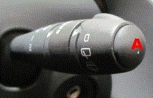

Resetting service message
This function is used to manually turn off the service indicator.
Note:
The service indicator can only be reset manually if remaining driving distance to next service is less than 1500 km.
Procedure:
Turn on the ignition.
Wait until the service interval indicator turns off.
Press repeatedly on button A until "Driving distance before service" is shown.
Press and hold in button A for approx. 10 seconds until the new service interval is shown.
Let up button A.
Turn off the ignition.
